Kotohira, Kagawa: things to do, food and stays
Kotohira · Kagawa
Kotohira
Highlighted on the Kagawa map.

Stay
ことひら温泉琴参閣

Kotohira Onsen Kon San Kaku
Inn at Kotohira Onsen in Kotohira.
琴平花壇
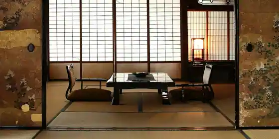
Kotohira Kadan
Inn at Kikaoruteienno Onsen in Kotohira.
御宿 敷島館(共立リゾート)
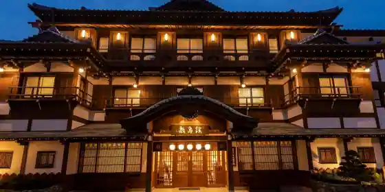
Onjuku Shikishima Kan (Kyoritsu Resort)
Resort hotel in Kawanishi, Kotohira with private baths.
琴平パークホテル
Kotohira Park Hotel
Hotel in Enai, Kotohira with parking and scenic views.
湯元こんぴら温泉華の湯 紅梅亭
Yumoto Konpira Onsen Hana No Yu Kobai Tei
Inn at Yumotokonpira Onsen in Kotohira with open-air baths.
琴平グランドホテル 桜の抄
Kotohira Grand Hotel Sakura No Sho
Hotel at Danmenitatazumu Onsen in Kotohira with open-air baths.
Lien de premier 讃
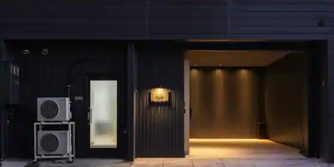
Lien de premier San
Lien de premier 宙
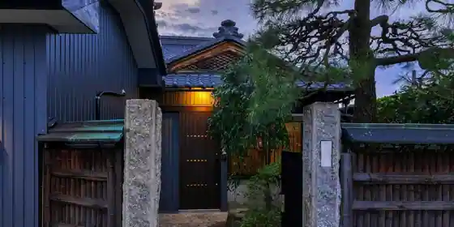
Lien de premier Chu
琴ノ宿 Chizu
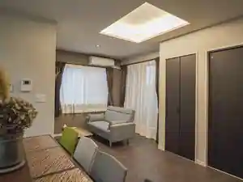
Kon No Yado Chizu
Inn at Juntennen Onsen in Enai, Kotohira with a sauna.
GOKAN KOTOHIRA
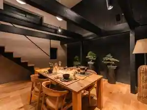
GOKAN KOTOHIRA
こんぴら町家 うす
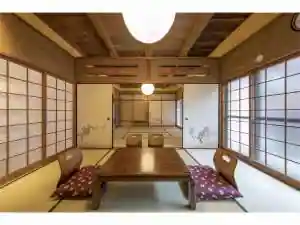
Konpira Choka Usu
Inn in Enai, Kotohira with one group per day and a renovated traditional house.
琴平リバーサイドホテル
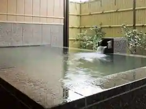
Kotohira Ribasaido Hotel
Hotel in Kotohira with business travelers.
Dining
手打ちうどん むさし

Teuchi Chiudon Musashi
神椿
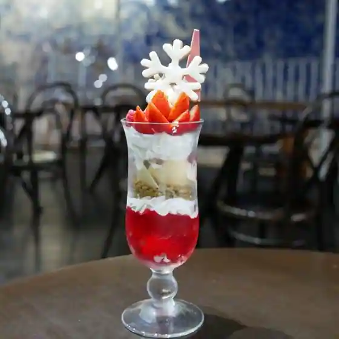
Kami Tsubaki
こんぴらうどん 本店
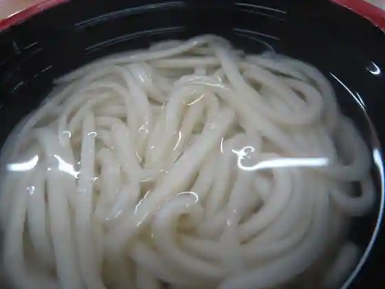
Konpiraudon Hon
平岡精肉店
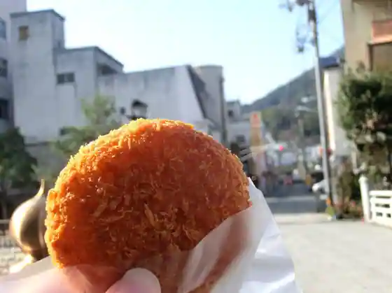
Hiraoka Seiniku
いわのや
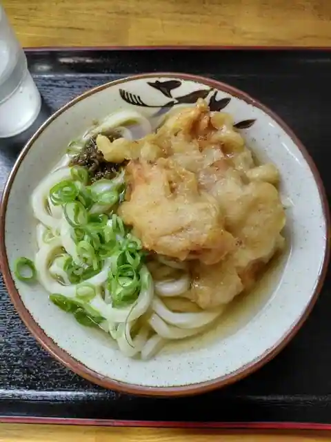
Iwanoya
讃岐うどん めん舟
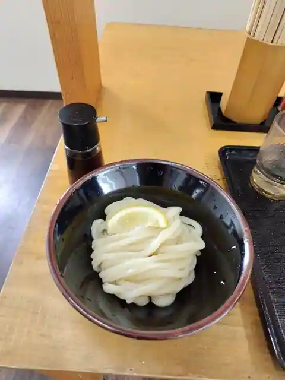
Sanuki Udon Men Fune
灸まん本舗 石段や 本店
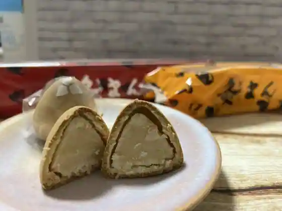
Kyu Man Honpo Ishidan Ya Hon
さぬき名物 骨付鳥 田中屋
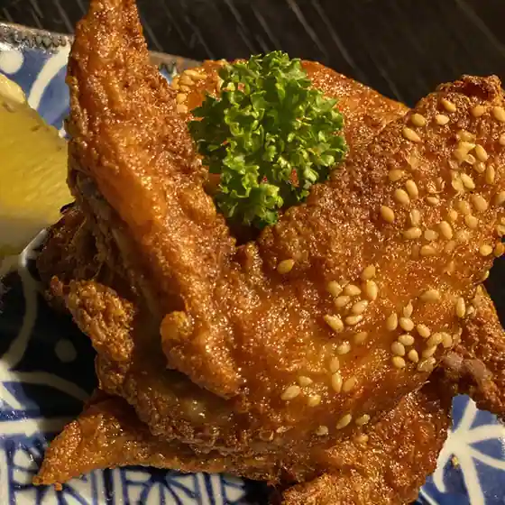
Sanuki Meibutsu Hone Tsuki Tori Tanaka Ya
アカボシ珈琲店
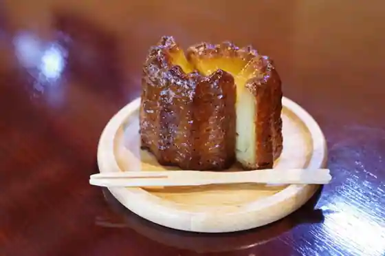
Akaboshi Coffee
てんてこ舞
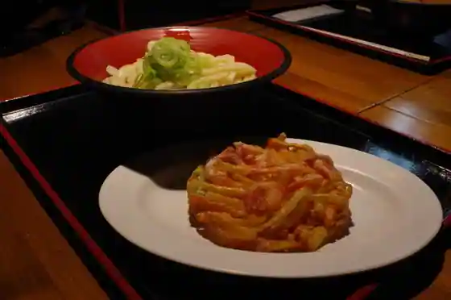
Tenteko Mai
焼鳥 骨付鳥 田中屋
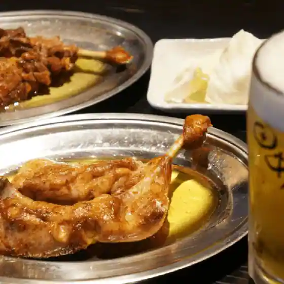
Yakitori Hone Tsuki Tori Tanaka Ya
こんぴらうどん 本社工場併設店
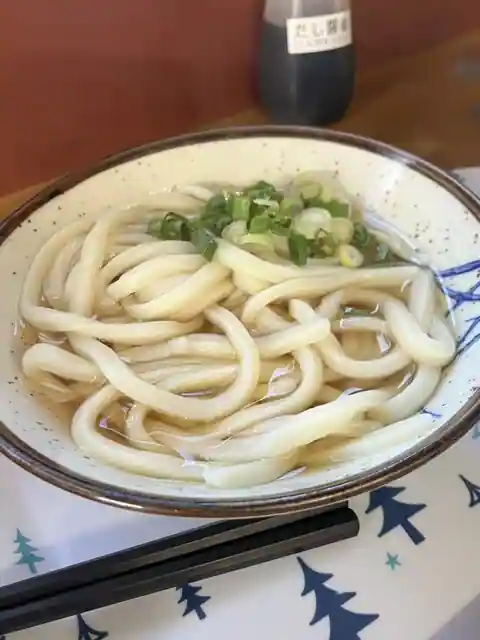
Konpiraudon Honshakojo Heisetsu
こんぴらプリン
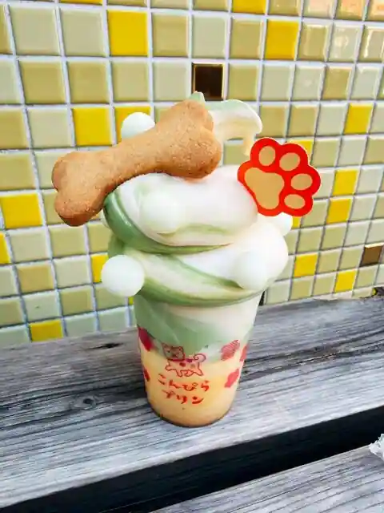
Konpira Purin
紅梅亭
Kobai Tei
ナカノヤ 琴平
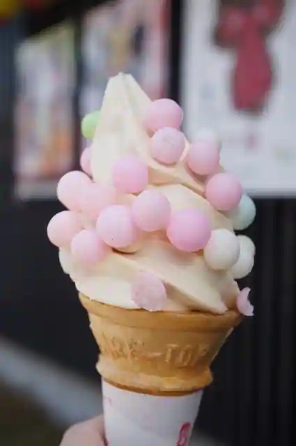
Nakanoya Kotohira
シラカバ
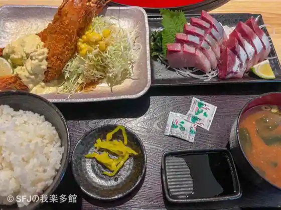
Shirakaba
浪花堂餅店
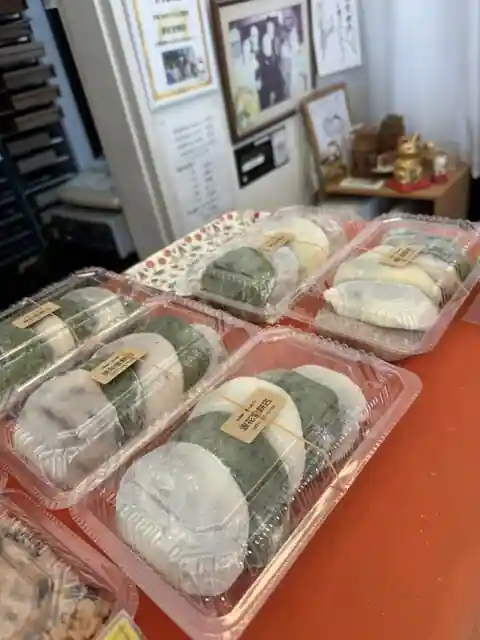
Naniwa Do Mochi
しょうゆ豆本舗 表参道店
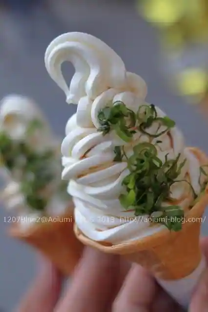
Shoyu Mamehon Ho Omotesando
虎屋うどん
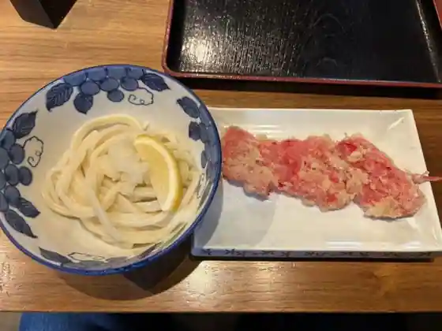
Tora Ya Udon
紀の國屋 本店
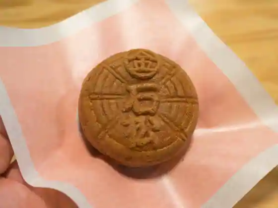
Ki No Kuni Ya Hon
藤の家食堂
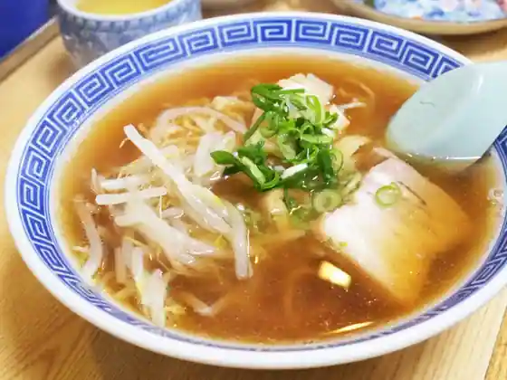
Fuji No Ie Shokudo
狸屋
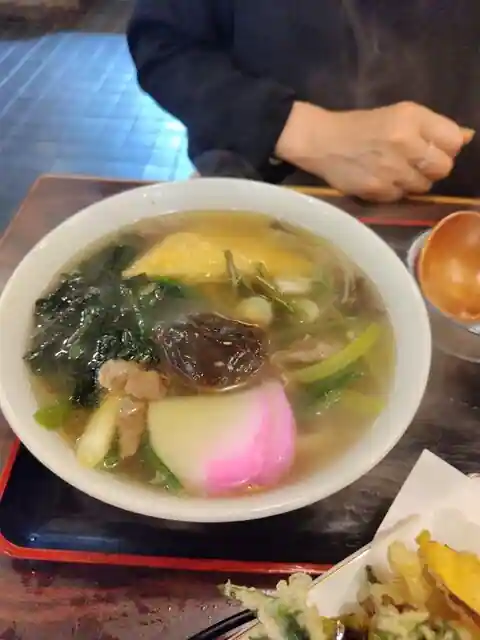
Tanuki Ya
金陵の郷
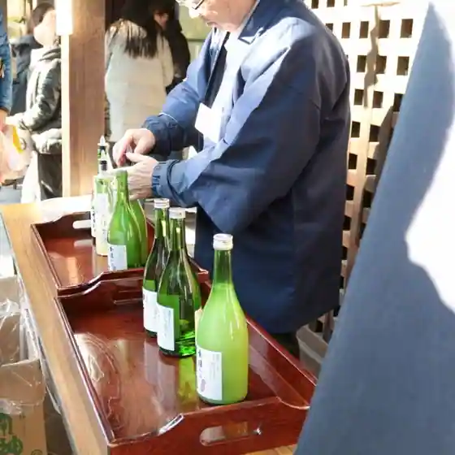
Kinryo No Sato
Sights
Kotohira Miya
Asahi Sha

Kotohira Miya Omotesando

Saya Hashi

Taka Toro